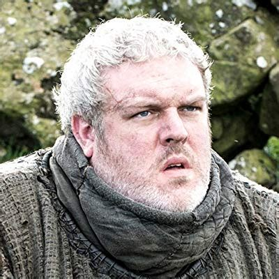
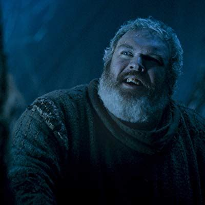

Some things about Hodor:

Hodor is a wise man. He is quite contemplative, and a very good listener.

Hodor has been through some rough times. He can relate to the average Westerosi.

Hodor is a happy fellow. Look at that smile!

Hodor has a heart-wrenching origin story.